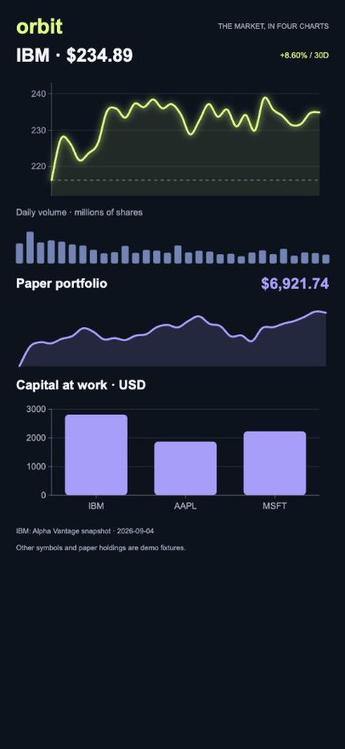
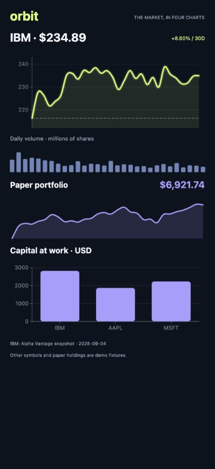
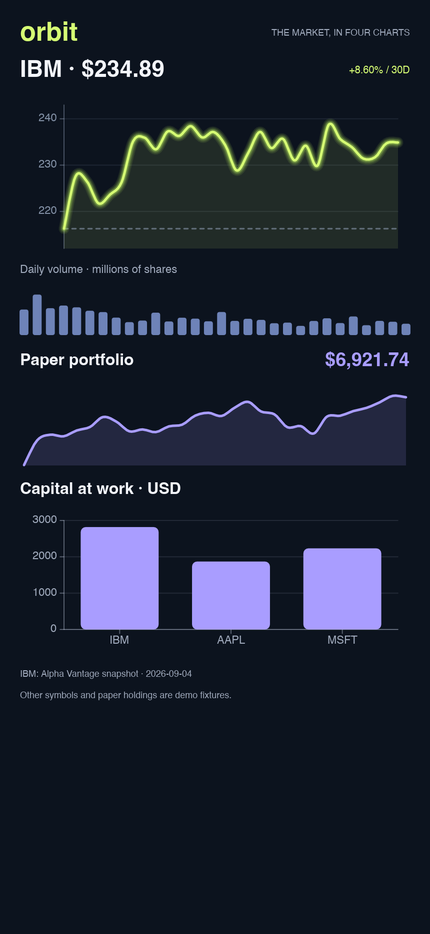
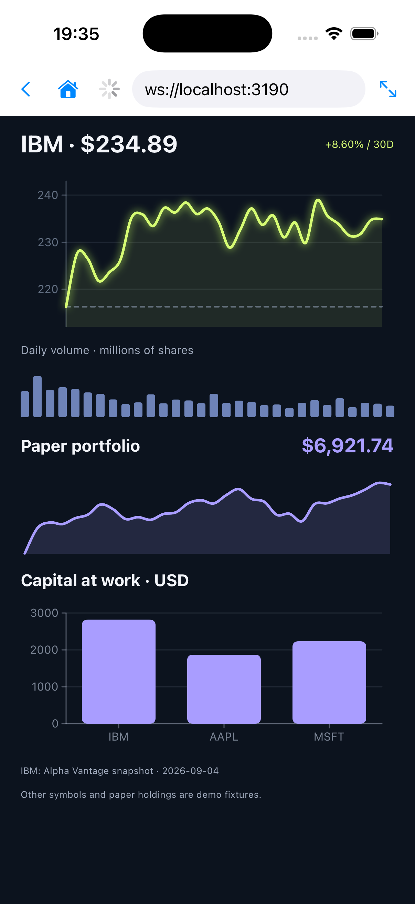
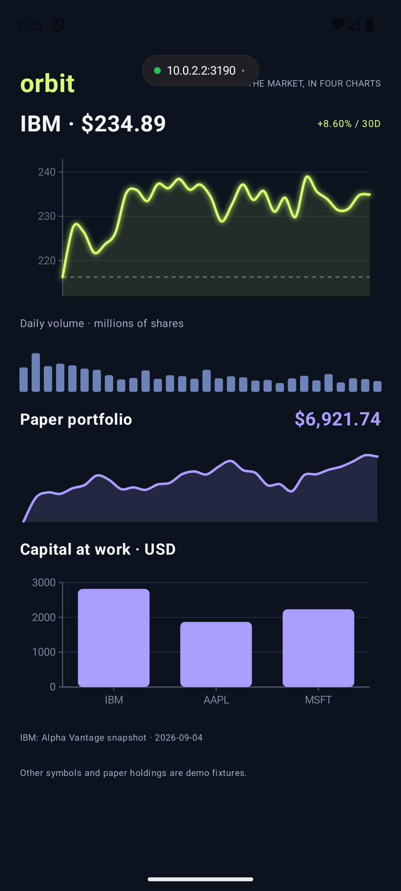

SVG · 430 px app content
Canvas 2D · 430 px app content
Vello · 430 × 934 logical pixels
iPhone 17 Pro · iOS 26.3
Pixel 8 emulator · Compose CanvasReal Hypen charts on Web DOM, Web Canvas, Desktop, iOS and Android. Every renderer receives the same IBM snapshot and paper holdings. Captured on 6 September 2026.
Open the live stock app →New: refined black-theme preview. The comparison below preserves the original renderer-validation captures.

SVG · 430 px app content
Canvas 2D · 430 px app content
Vello · 430 × 934 logical pixels
iPhone 17 Pro · iOS 26.3
Pixel 8 emulator · Compose Canvas